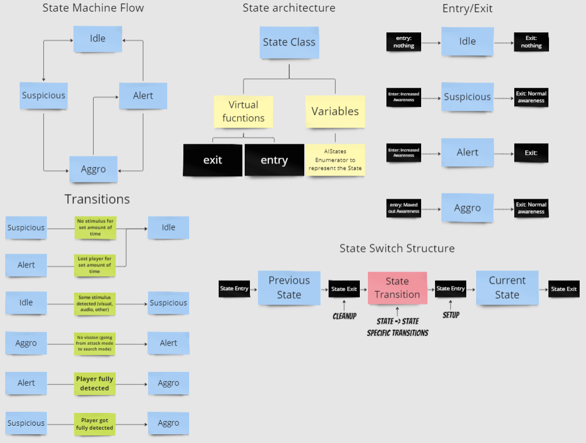

Team: 8 programmers & 15 designers.
The AI Team specifically: 3 programmers & 1 designer.
My role: AI programmer / "Assisting" designer.
My contribution:

I setup the foundations for the AI to be build upon. This includes things like the flow of the behaviour tree, the state machine but also C++ structures like the State class used to call the entry and exit functions of specific states. I made sure switching states happens in one single place and makes sure entry, exit and specific transitional functions get called at the right time. There is also the Conditional check that like the state switching happens in one place where its easy to oversee the flow and figure out any bugs or issues. The image shows the "on paper" design of this I made using the program Miro.
For the AI I mainly worked on the suspicious (investigation) state. I both implemented it and did some of the design while keeping close communication with the AI designer who at the time was busy with other aspects of our game. The AI is somewhat inspired by the games "Dishonoured" and "Plague tale" which we used as reference for its behaviour. The suspicious state was meant as an investigation state where the AI is not yet aware of the player but it did see or hear something. When the AI sees or hears something it will move towards the source using Unreal‘s "Environmental query system" to get a more natural destination. From there it will do one last movement to investigate and then return to its patrol or stationary guarding position. The AI can
At the time of writing group behaviour, including for the suspicious state, is planned but was not yet added.
I implemented the audio perception for the AI where a wall, by default, will block noise that the AI would otherwhise detect. This is done with several checks.If there even is a wall.
If the wall allows for noise to pass through it (a plank wall for example)
If sound could go over the wall by checking for a roof and the size of the wall
If sound could go around the wall using pathfinding (not perfect but close neough for the AI
bechaviour we want so far)
Based on the outcomes of these test I allow the AI to detect the noise.
My role: AI programmer / "Assisting" designer.
My contribution:
- AI Architecture
- AI behaviour, mainly the suspicious state (Investigation state)
- AI Audio Detection including walls blocking sound
- Unreal World Partitioning
The Game
This game is a third-person stealth assassination game set in Antwerp during "The Spanish Fury - 1576".
You play as an inventor/toymaker who fought in the war but lost their arm, replacing it with a mechanical one.
Your goal in the game is to reach and eliminate a specific target, taking out Spanish soldiers along the way.
To do this, the player can use their mechanical arm and other gadgets they have at their disposal.
AI Architecture
I setup the foundations for the AI to be build upon. This includes things like the flow of the behaviour tree, the state machine but also C++ structures like the State class used to call the entry and exit functions of specific states. I made sure switching states happens in one single place and makes sure entry, exit and specific transitional functions get called at the right time. There is also the Conditional check that like the state switching happens in one place where its easy to oversee the flow and figure out any bugs or issues. The image shows the "on paper" design of this I made using the program Miro.
AI behaviour / Suspicious State (WIP)
For the AI I mainly worked on the suspicious (investigation) state. I both implemented it and did some of the design while keeping close communication with the AI designer who at the time was busy with other aspects of our game. The AI is somewhat inspired by the games "Dishonoured" and "Plague tale" which we used as reference for its behaviour. The suspicious state was meant as an investigation state where the AI is not yet aware of the player but it did see or hear something. When the AI sees or hears something it will move towards the source using Unreal‘s "Environmental query system" to get a more natural destination. From there it will do one last movement to investigate and then return to its patrol or stationary guarding position. The AI can
At the time of writing group behaviour, including for the suspicious state, is planned but was not yet added.
Audio perception (WIP)
I implemented the audio perception for the AI where a wall, by default, will block noise that the AI would otherwhise detect. This is done with several checks.